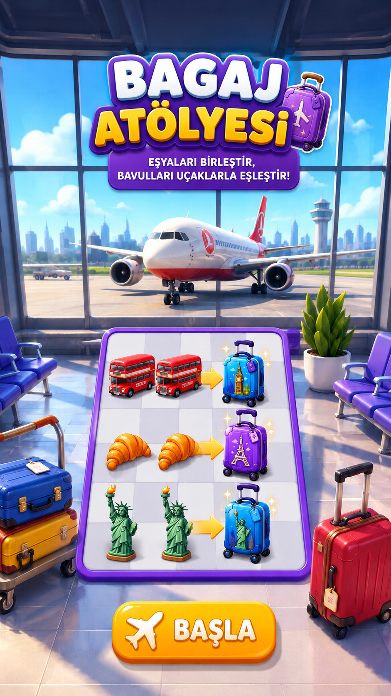

SİPARİŞ0/6
PUAN0
SÜRE02:00

Hediyelikleri birleştir, bagajı hazırla, doğru uçağa yükle.
geçici ekran — tasarım görseli gelince kalkacakTamamlanan sipariş: 0/6
Kalan süre: 00:00
0 puan
geçici ekran — tasarım görseli gelince kalkacak